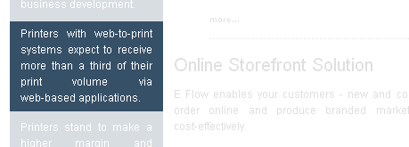

<?xml version="1.0" encoding="UTF-8"?><rss version="2.0"
	xmlns:content="http://purl.org/rss/1.0/modules/content/"
	xmlns:wfw="http://wellformedweb.org/CommentAPI/"
	xmlns:dc="http://purl.org/dc/elements/1.1/"
	xmlns:atom="http://www.w3.org/2005/Atom"
	xmlns:sy="http://purl.org/rss/1.0/modules/syndication/"
	xmlns:slash="http://purl.org/rss/1.0/modules/slash/"
	>

<channel>
	<title>About web to print software &#8211; Web-to-Print &amp; Dynamic Imaging</title>
	<atom:link href="http://www.zetaprints.com/category/about-web-to-print-software/feed" rel="self" type="application/rss+xml" />
	<link>http://www.zetaprints.com</link>
	<description></description>
	<lastBuildDate>Mon, 01 Feb 2016 23:12:46 +0000</lastBuildDate>
	<language>en-US</language>
	<sy:updatePeriod>hourly</sy:updatePeriod>
	<sy:updateFrequency>1</sy:updateFrequency>
	<generator>https://wordpress.org/?v=4.4.1</generator>
	<item>
		<title>Web-to-print marketing</title>
		<link>http://www.zetaprints.com/about-web-to-print-software/web-to-print-marketing</link>
		<pubDate>Thu, 20 Aug 2009 12:11:22 +0000</pubDate>
		<dc:creator><![CDATA[admin]]></dc:creator>
				<category><![CDATA[About web to print software]]></category>

		<guid isPermaLink="false">/?p=1140</guid>
		<description><![CDATA[
Getting a web-to-print website is easy. Getting it to make you money is not. We have a few do-s and...]]></description>
				<content:encoded><![CDATA[<div>
<p><strong>Getting a web-to-print website is easy. Getting it to make you money is not. We have a few do-s and don’t-s for you to consider before you take a plunge.<span id="more-1140"></span></strong></p>
<h2>Web-to-print &amp; new customers</h2>
<p>Having a fancy website without good sales people and smart marketing won’t bring new customers. The technology is only one of components of the service a printer provides. Do not oversell it. Price, quality, delivery times, etc are more important to the customer. Web-to-print adds convenience to the overall process and reduces costs at both ends. <strong>The technology is only beneficial when both price and time are a priority consideration</strong>.</p>
<h2>End consumer products</h2>
<p>The competition in this market is fierce. Several established players like VistaPrint, Click Business Cards, 123 Print and many-many others have large scale operations, rock-bottom prices and huge advertising budgets. It will be very difficult for a small player to get noticed.</p>
<h3>Google search results</h3>
<p>“<em>business cards</em>” &#8211; <span>36,400,000 results</span></p>
<p>“<em>business cards plumber</em>” &#8211; 479,00 results</p>
<p>The first 10 pages are taken by old, well-optimized websites. It will take time and effort to move your website to the top of search results.</p>
<h3>Google advertising</h3>
<p>Search engine advertising is very expensive for popular keywords.</p>
<p><a href="../../../old/wp-content/uploads/2008/04/new-11.gif"></a><br />
Assume that optimistic 10% of clicks result in an order.<br />
284 clicks * 0.1= <strong>28 orders a day at a cost of $127.5 per order</strong> ($3,570 / 28).</p>
<h2>Corporate products</h2>
<p>Web-to-print is an excellent sales tool. It gives your sales people a good excuse to call a potential corporate customer because you can offer what others cannot. Businesses with large number of customer-facing staff or those who order and re-order often are your best bet. Remember that their time spent ordering a product from you costs them money and lost productivity, but don’t be surprised if they don’t like doing it online. There are plenty of people who prefer the old way.</p>
<p>Charging a premium for your online services is risky, because your competitors don’t</p>
<p>The effort of setting up a template is roughly equivalent to processing 2 orders manually. Will they order often enough?</p>
<h2>Brands and franchises</h2>
<p>A deal with a franchise head office or a brand name holder is an excellent opportunity to get high order volumes at very little customer acquisition cost. Web-to-print is perfectly suited for this type of customers. The technology does make a big difference here.</p>
<h2>Brands and franchises &#8211; partisan approach</h2>
<p>A lot of master franchises and brand name holders neglect the printing and advertising aspect of their business or demand exuberant prices though “preferred suppliers”. It leaves the franchisees unhappy and looking for better alternatives. Usually it is not difficult to identify individual franchise holders and approach them directly with your offer. It should be very easy for you to beat the prices demanded by the “preferred supplier”.</p>
<p>A good service, low prices and the convenience of web-to-prit will quickly bring you more franchise members through word of mouth. You can achieve the same low customer acquisition cost and web-to-print technology makes all the difference.</p>
<p><a href="http://designsthatsell.biz/"></a><a href="http://designsthatsell.biz/"></a><a href="http://designsthatsell.biz/"></a></p>
<p>Consider copyright and trademark issues. Their head offices may not like your approach.</p>
<h2>Niche consumer products</h2>
<p>We see some incredible examples of web-to-print being used for niche products of all sorts and kinds. It is all about knowing that niche market and having access to the customer base. A simple example &#8211; greeting cards. Who would think that apart from a few big players there are successful printers servicing tiny micro-markets where good service, right price, excellent designs and the convenience of web-to-print bring very good order volumes.</p>
<h2>Conclusion</h2>
<p>Web-to-print is only a tool and will not replace your sales and marketing. You can extract only as much value out of it as you put into promoting and selling your services.</p>
<p>No matter how good your web-to-print software is, but if the price is too high or the quality is too low it cannot not help you get more business through the door.</p>
</div>
]]></content:encoded>
			</item>
		<item>
		<title>Web-to-print pitfalls</title>
		<link>http://www.zetaprints.com/about-web-to-print-software/web-to-print-pitfalls-2</link>
		<pubDate>Wed, 27 May 2009 21:48:41 +0000</pubDate>
		<dc:creator><![CDATA[admin]]></dc:creator>
				<category><![CDATA[About web to print software]]></category>

		<guid isPermaLink="false">/?p=780</guid>
		<description><![CDATA[
A poof of a pudding is in eating it. A short trial isn’t enough to really understand what to expe...]]></description>
				<content:encoded><![CDATA[<div class="the_content">
<p><strong>A poof of a pudding is in eating it. A short trial isn’t enough to really understand what to expect. We give you some insider information on what to watch out for.<span id="more-780"></span></strong></p>
<h2>Basic websites</h2>
<p>A website for a printing company should not cost you any more than a few hundred dollars, depending on how much custom design work you need. Read about our free <a title="Free printer's websites" href="../../../printers/free-websites/124/"><strong>website for printers</strong></a> project. The time of paying thousands of dollars for it are in the past. Here are some questions you need to ask:</p>
<ul>
<li>How do you manage the content?</li>
<li>How much storage do you get?</li>
<li>Monthly traffic allowance?</li>
<li>Can you add new functionality later (widgets)?</li>
</ul>
<h2>File uploading</h2>
<p>File uploading is simple, but can be quite limiting if not done right.</p>
<ul>
<li>What’s the largest file size?</li>
<li>How much storage?</li>
<li>How long will the file be retained?</li>
<li>What are the traffic limits?</li>
<li>Will the transfer resume from the last known point If a connection breaks?</li>
</ul>
<h2>Quoting interface</h2>
<p>The main question is usability. Ask a friend unfamiliar with printing and publishing to fill in the form. Most of those quote request forms are way too complex for the average print buyer. Potential customers will not even try to get a quote from you if the form looks complex.</p>
<h2>Template preparation</h2>
<p>The cost of preparing a template should be no more than the cost of making a design. Existing designs should be easy to convert into a template. Making templates can quickly become an impediment and a major cost center.</p>
<ul>
<li>How much work do you need to do to turn a design into a template?</li>
<li>If you make changes to the design, do you need to start it all over with the template?</li>
<li>How many different applications do you need to prepare a template?</li>
<li>Do you need to start over if you give the design to someone else to make changes?</li>
<li>What are file size limitations on the template file?</li>
</ul>
<h2>Pre-press</h2>
<p>The files you get from your web-to-print site should be press-ready. The proofs users see should be a user-friendly representation of what the final product will look like, not a 6-up imposed PDF with crop-marks and densitometer scales.</p>
<ul>
<li>Do you have full control over color spaces and spot colors?</li>
<li>Can you separate proofs shown to the customer from the imposed files you get for pre-press?</li>
<li>What choice of PDF versions and features do you get?</li>
</ul>
<h2>Design limitations</h2>
<p>Can you go beyond simple business card designs with straight lines and rectangular images?</p>
<p>Most simple web-to-print systems have very limited design capabilities. The business card demo may look good, but few real life designs are that simple.</p>
<ul>
<li>What parts of design can you make variable?</li>
<li>Can you use gradients, transparencies, drop-shadow, custom outlines, perspective, distortion, text on path, lens, blending, filters, clip-paths and other essential design techniques for the variable part?</li>
<li>What are the maximum and minimum canvas sizes?</li>
<li>What resolution can be used? Is it fixed or flexible?</li>
</ul>
<h2>Fonts</h2>
<p>You will need to upload your own fonts sooner or later, no matter how many fonts are already installed on your web-to-print server.</p>
<ul>
<li>Can you upload your own fonts?</li>
<li>Do you have to pay for uploading your font?</li>
<li>Do they need to be manually installed?</li>
<li>What if you upload two different looking fonts with the same name?</li>
</ul>
<h2>Rules and constraints</h2>
<p>Templates need to have a certain level of flexibility for user input variations. Corporate designs require constraints to preserve the branding. On the other hand, making the rules too strict will mean lost business for you in special cases when the rules do not apply because the system will not accept the data and the user will give up.</p>
<ul>
<li>User image quality control: resolution, size, color space.</li>
<li>Lengths: minimal, maximal.</li>
<li>Automatic formatting and validation: phone numbers, emails, web addresses.</li>
<li>Casing: automatic case change to lower case, UPPER CASE, Title Case, Sentence case.</li>
<li>Drop downs with predefined values.</li>
<li>Will the rules and constraints stay if the template is re-uploaded?</li>
</ul>
<p>Some software is made smarter than the users. It will not let the user do something it thinks is wrong, even if the user is right. For example, it wants to see all phone numbers as <em>(area code)-phone number</em> and the user wants to enter <em>1-800-number</em>.</p>
<h2>Cost of maintenance</h2>
<p>How big are you going to grow your web-to-print service? Will it be 20, 200 or 2000 templates?</p>
<p>How many users?</p>
<p>The maintenance of the product database, prices, user lists, discounts and other details becomes prohibitively expensive as soon as you get over a certain volume. There must be some ways of applying changes in bulk or through</p>
<h2>Vendor consulting</h2>
<p>Consulting services offered by software vendors are a sure sign you will need them to get their solution going and maintained. Add it to <strong><a title="Web-to-print cost of ownership" href="../../../web-to-print-software/web-to-print-cost-of-ownership/82/">the cost</a></strong> even if you don’t expect to.</p>
<ul>
<li>Can you realistically install their software yourself?</li>
<li>Do you need their help with template development?</li>
<li>Do you need them to be involved every time you want: a new font, new template, new library image, new user, new something else?</li>
</ul>
</div>
]]></content:encoded>
			</item>
		<item>
		<title>Types of web-to-print</title>
		<link>http://www.zetaprints.com/about-web-to-print-software/types-of-web-to-print-2</link>
		<pubDate>Wed, 27 May 2009 21:47:44 +0000</pubDate>
		<dc:creator><![CDATA[admin]]></dc:creator>
				<category><![CDATA[About web to print software]]></category>

		<guid isPermaLink="false">/?p=778</guid>
		<description><![CDATA[
Web-to-print is a very generic term. The meaning changes depending on who you talk to. We attempt t...]]></description>
				<content:encoded><![CDATA[<div class="the_content">
<p><strong>Web-to-print is a very generic term. The meaning changes depending on who you talk to. We attempt to categories it here.<span id="more-778"></span></strong></p>
<h2>Website for printers</h2>
<p>It’s the most basic offer you can find. In the nutshell, it’s an informational website about your printing business. It would have information about your business, equipment, capabilities, contact details and so on.</p>
<p><a href="../../../wp-content/uploads/2009/06/web-site-for-printers1.gif"></a> <a href="../../../wp-content/uploads/2009/06/web-site-for-printers2.gif"></a> <a href="../../../wp-content/uploads/2009/06/web-site-for-printers3.gif"></a> <a href="../../../wp-content/uploads/2009/06/web-site-for-printers4.gif"></a></p>
<p>There is no need to pay for something as simple as this because <strong><a title="Free websites for printers" href="../../../printers/free-websites/124/">you can get it for FREE</a></strong>. We have <strong><a title="Website building manual" href="../../../help/website-builder/">detailed D.I.Y. instructions</a></strong> on how to put a really cool website together in a few hours and host it for $5 a month.</p>
<h2>File transfer and quoting</h2>
<p><a href="../../../wp-content/uploads/2008/04/quoting-and-file-transfer.gif"></a>File transfer and quoting can be bolted on top of your basic website structure. Customers can send you their files or fill in a form to request a quote. The price for this service has fallen through the floor and you can get <strong><a href="../../../help/large-file-upload/">free file transfer</a> </strong>and <strong><a href="../../../help/quotes-files/">free quoting</a></strong> in minutes.</p>
<h2>Design it yourself</h2>
<p>Anyone who can produce a design already has tools to do it. Most users do not want to design. They prefer to find a design they like and personalize it. This type of web-to-print software is only suitable for low end consumer products. The price for <em>a design-it-yourself</em> solution can be as low as $5. <strong><a title="5-dollar-web-to-print" href="../../../blog/2008/04/16/web-to-print-website-for-5/">Get one now</a></strong>.</p>
<h2>Template based</h2>
<p>Template based web-to-print is ideally suited for business printing.</p>
<ul>
<li>Corporate customers have to adhere to their branding.</li>
<li>They re-order often enough to justify the investment in making a template.</li>
<li>The simpler and quicker the ordering process is the more corporate customers like it.</li>
</ul>
<p>There are many flavours of template-based web-to-print software, but the essence is the same: choose from a list of templates, type in your text, upload images, press the button and it’s all done for you. The fundamental difference for the business is in the technology used to prepare the templates and the <strong><a title="Web-to-print cost per oder" href="../../../web-to-print-software/web-to-print-software-cost-per-order/83/">cost per order</a></strong>.</p>
<h3>PDF templates</h3>
<p>PDF is <a title="Inside PDF and why it can't really be edited." href="http://www.adobe.com/print/features/psvspdf/" target="_blank">fixed layout format</a> designed to present the final output. Using PDF as your template is very limiting. Web-to-print systems have all sorts of PDF editing interfaces to make them usable as templates, but nonetheless there are too many limitations. This type of web-to-print is more than enough for simple products with straight text lines like business cards. It gets more difficult with creative designs where the variable elements undergo transformations like gradient fills, transparency, drop shadow, etc. The time it takes to explain what is what in your PDF to the web-to-print system may be more than what you save on taking a few orders.</p>
<h3>InDesign and Quark Xpress templates</h3>
<p>InDesign and Quark Xpress are the most advanced application used in pre-press and layout work. The cost of deploying their server solutions is very-very-very high. It is affordable to large printers or publishing houses only, but the ROI can still be questionable.</p>
<h3>CorelDRAW templates</h3>
<p>CorelDRAW is another well-known and respected vector graphic application. Our hosted <strong><a href="../../../">web-to-print software</a></strong> accepts CorelDRAW files. The great advantage is that all the field names, layout rules and other constraints are right there in the file. You simply upload it and it’s ready to go. The cost of building the templates is brought to the minimum. E.g. you can <strong><a title="demo: PDF to web-to-print template" href="../../../help/pdf-to-template-conversion/">convert a PDF file</a></strong> into a CorelDRAW template in about a minute.</p>
<p>CorelDRAW templates provide the best value for money with minimal design limitations.</p>
</div>
]]></content:encoded>
			</item>
		<item>
		<title>Is web-to-print right for you?</title>
		<link>http://www.zetaprints.com/about-web-to-print-software/is-web-to-print-right-for-you-2</link>
		<pubDate>Wed, 27 May 2009 21:46:40 +0000</pubDate>
		<dc:creator><![CDATA[admin]]></dc:creator>
				<category><![CDATA[About web to print software]]></category>

		<guid isPermaLink="false">/?p=776</guid>
		<description><![CDATA[
There has been a lot of hype about web-to-print. The reality may be totally different. We collected...]]></description>
				<content:encoded><![CDATA[<div class="the_content">
<p><strong>There has been a lot of hype about web-to-print. The reality may be totally different. We collected some facts and observations of the industry and of our own customers.<span id="more-776"></span></strong></p>
<h2>Who’s behind the hype?</h2>
<p>The vendors. We get on average 1 email a day with offers of web-to-print software of all sorts and kinds. Usually they promise a rosy future as soon as we buy and install their software. It is understandable &#8211; they need to sell. Read on to find out why this statement from one of the promotional emails is misleading:</p>
<p></p>
<h2>Web-to-print flavors</h2>
<p>There is no exact definition what web-to-print is. It presumes a website with some feature set to facilitate transactions between print buyers and a printing company or advertisers and a publication. Web-to-print solutions can be categorized by their features:</p>
<ul>
<li><strong>Basic</strong>: Website for a printing company</li>
<li><strong>Useful</strong>: File transfer and quoting</li>
<li><strong>Fancy</strong>: Design it yourself</li>
<li><strong>Advanced</strong>: Template based</li>
</ul>
<p><strong><a title="Types of web-to-print" href="../../../about-web-to-print-software/types-of-web-to-print/">Read more</a></strong> what is behind each of these types and how to get them for FREE.</p>
<h2>Build it and they will come</h2>
<p>One of the main misconceptions about web-to-print is that it’s a magic technology to boost your sales the day you buy it. At least this is the picture software vendors portray to the industry, but nothing can be further from the reality. Read what it takes to <strong><a title="Web-to-print marketing" href="../../../about-web-to-print/web-to-print-marketing/">make your web-to-print a success</a></strong>.</p>
<h2>Web-to-print is a growth tool</h2>
<p>There are only 2 real benefits of web-to-print:</p>
<ul>
<li>convenience</li>
<li>cost reduction</li>
</ul>
<p>Everything else is a flow-on effect. The real value of web-to-print technology is in supporting your growth, because you can do it at a faster pace without increasing your design and administration resources. The cost reduction benefit depends on the <strong><a title="Web-to-print cost of ownership" href="../../../web-to-print-software/web-to-print-software-cost-per-order/83/">Cost Per Order</a></strong>.</p>
<h2>Is web-to-print right for you?</h2>
<p>Answer these simple questions and decide for yourself if web-to-print software can help you.</p>
<p><strong>Growth</strong>:</p>
<ul>
<li>Do you want to grow?</li>
<li>Do you want to increase your market share?</li>
<li>Do you want to explore new markets?</li>
</ul>
<p><strong>Product types</strong>:</p>
<ul>
<li>How many orders are alike?</li>
<li>How many are repeating orders and re-orders?</li>
<li>How many designs can be templated?</li>
<li>Are most of your jobs unique or one-off?</li>
</ul>
<p><strong>Resources</strong>:</p>
<ul>
<li>Do you have sales and marketing capacity to promote your web-to-print service?</li>
<li>Who will convert customer designs into templates for you?</li>
</ul>
<p><strong>Customer types</strong>:</p>
<ul>
<li>Do your customers need personal assistance and advice with every order?</li>
<li>Are your customers capable of using the Internet?</li>
</ul>
<h2>Reasons to skip</h2>
<p>Many printing and publishing businesses are quite happy the way they are and <strong>don’t want to grow</strong>. Some others <strong>do not see the Internet as an avenue for expansion</strong>.</p>
<p>Not every printing business can benefit from what web-to-print has to offer at this stage of technological development, but <strong>watch out for your competition</strong>. They may figure out how to use the web and take over some of your customers before you realize what is happening.</p>
<h2>Value for money</h2>
<p>Purchasing a piece of web-to-print software is only one of many expenses a printing or publishing businesses will need to incur before any return on investment. Read about <strong><a title="web-to-print cost components" href="../../../about-web-to-print-software/web-to-print-cost-components/">hidden costs</a></strong> and many <strong><a title="Web-to-print pitfalls" href="../../../about-web-to-print-software/web-to-print-pitfalls/">pitfalls to avoid</a></strong>.</p>
</div>
]]></content:encoded>
			</item>
		<item>
		<title>Hosted web to print solution</title>
		<link>http://www.zetaprints.com/about-web-to-print-software/hosted-web-to-print-solution-2</link>
		<pubDate>Wed, 27 May 2009 20:29:57 +0000</pubDate>
		<dc:creator><![CDATA[admin]]></dc:creator>
				<category><![CDATA[About web to print software]]></category>

		<guid isPermaLink="false">/?p=774</guid>
		<description><![CDATA[
ZetaPrints web-to-print solution is fully hosted. Sign up and you can be taking orders in minutes.
...]]></description>
				<content:encoded><![CDATA[<div class="the_content">
<p>ZetaPrints <strong>web-to-print solution</strong> is fully hosted. <a title="Sign up to web to print" href="http://zetaprints.com/?page=printer-new;">Sign up</a> and you can be taking orders in minutes.<span id="more-774"></span></p>
<h2>Our success depends on yours</h2>
<p>We only <a title="hosted web to print pricing" href="../../../printers/web-to-print-pricing-printer/">get paid</a> when you get an order.</p>
<h2>Initial investment</h2>
<p>Unlike buying <em>web to print software</em>, the first time you need to reach for your wallet is when the orders start rolling in and you are fully satisfied with our offer. Enjoy a free ride until then.</p>
<h2>Your growing needs</h2>
<p>We provide continuous stream of new <a title="New features blog category" href="../../../blog/category/zetaprints-features/printer-update-history/">web to print features</a>, bug fixes and improvements. We work closely with our customers to meet their needs and get more business through the door.</p>
<h2>Performance and support</h2>
<p>Our <em>web-to-print system</em> runs on a highly scalable cluster to ensure your customers do not get <a title="Web to print growth considerations" href="../../../web-to-print-software/web-to-print-growth-pains/78/">bottlenecks at peak hours</a>. We scale out to accommodate more business all the time.</p>
<h2>Web to print pilot</h2>
<p>Setting up with ZetaPrints web-to-print hosted system <a title="Sign up demo" href="../../../flash/printer-sing-up.html">takes minutes</a>. We invite you to use us as your <a title="Sign up to web to print" href="http://zetaprints.com/?page=printer-new;">free web to print pilot</a> before you make the decision to purchase any <em>web-to-print software</em>. There is no time or volume limit on the trial. Use it as needed to prove the case and understand your real needs.</p>
</div>
]]></content:encoded>
			</item>
		<item>
		<title>Disadvantages of “hosted”</title>
		<link>http://www.zetaprints.com/about-web-to-print-software/disadvantages-of-%e2%80%9chosted%e2%80%9d</link>
		<pubDate>Wed, 27 May 2009 20:07:28 +0000</pubDate>
		<dc:creator><![CDATA[admin]]></dc:creator>
				<category><![CDATA[About web to print software]]></category>

		<guid isPermaLink="false">/?p=772</guid>
		<description><![CDATA[Our hosted web-to-print software has many advantages: low cost, low maintenance, instant roll-out, f...]]></description>
				<content:encoded><![CDATA[<p><strong>Our hosted web-to-print software has many advantages: low cost, low maintenance, instant roll-out, free upgrades, no up-front investment, etc. On the other hand, “hosted” may be not your best option.<span id="more-772"></span></strong></p>
<h2>Interface</h2>
<p>It’s not always possible to make the site look exactly the way you want. We offer some <a title="web-to-print branding" href="../../../help/category/branding/">extensive customization features</a>, but it may not be enough for you. An alternative is for you to produce a custom web-to-print interface <a title="web-to-print integration" href="../../../help/category/api/">linked to our back-end</a>.</p>
<h2>Workflow</h2>
<p>The workflow for preparing a book using web-to-print is slightly different from the one for postcards or internet banners. Our web-to-print workflow is generic enough and is designed to be as simple as possible. An alternative would be for you to develop your own web-to-print workflow <a title="web-to-print integration" href="../../../help/category/api/">connected to our back-end</a>. An easier options is to tell us what is missing from our web-to-print workflow and we may add it in for you.</p>
<h2>Cost</h2>
<p>A large business may see purchasing and installing their own web-to-print system as a more viable option <em>because they can afford it</em>. Whether they are going to be better off going that route is another question.</p>
<h2>Data security</h2>
<p>Keeping your data on someone’s else server may be a frightening proposition for some. Many software vendors have unfair privacy and copyright policies where they become the owners of any data uploaded to their servers.</p>
<p><strong>Anything you upload to ZetaPrints belongs to you.</strong> We will never share your data with anyone else, nor we will ever contact your customers, except for technical support matters.<br />
See our <a title="Web-to-print privacy policy" href="../../../footer-menu/privacy-policy/22/">privacy policy</a>.</p>
<h2>“Not under my control”</h2>
<p>Some business managers need the absolute control over their operations and cannot delegate it to anyone. We will appreciate a chance to prove our worth as a trusted partner you can rely on. There is no expense in setting up, so why not <a title="Web-to-print sign-up" href="http://zetaprints.com/?page=printer-new;"><strong>give it a try</strong></a>?</p>
]]></content:encoded>
			</item>
		<item>
		<title>Getting stuck</title>
		<link>http://www.zetaprints.com/about-web-to-print-software/getting-stuck</link>
		<pubDate>Wed, 27 May 2009 20:07:05 +0000</pubDate>
		<dc:creator><![CDATA[admin]]></dc:creator>
				<category><![CDATA[About web to print software]]></category>

		<guid isPermaLink="false">/?p=770</guid>
		<description><![CDATA[
Vendor motivation
Web to print software vendors make money when they sell you licenses, training, c...]]></description>
				<content:encoded><![CDATA[<div class="the_content">
<h2>Vendor motivation</h2>
<p><strong>Web to print software vendors</strong> make money when they sell you licenses, training, conferences, support, updates, upgrades, more licensing, more training and finally if you can’t make it work they sell you consulting services.<span id="more-770"></span></p>
<p>Vendors are interested in maximizing <em>their </em>part of the <a title="Total cost of ownership explained" href="../../../web-to-print-software/web-to-print-cost-of-ownership/82/">total cost of ownership</a>. As a customer and a provider of <em>web to print services</em> to your customers you are interested in minimizing the cost of ownership.</p>
<p>Make sure you get sufficient value for money from your web to print investment.</p>
<h2>Getting stuck</h2>
<p><em>Web to print software</em> is a perfect example of <a href="http://en.wikipedia.org/wiki/Vendor_lock-in" target="_blank">vendor lock-in</a>. Once rolled out and in use for any significant period of time it is nearly impossible to switch. Some reasons why you would prefer to put up with an unsatisfactory <em>web to print solution</em>:</p>
<ul>
<li>You’ve already invested $15,000+ in it</li>
<li>Template migration is not practical</li>
<li>Databases are not compatible, manual data re-entry is required</li>
<li>Users are used to the interface</li>
<li>A new web to print solution means another round of customization</li>
<li>The new URL may result in broken links from partner sites and customer Intranets</li>
</ul>
<h2>Avoiding vendor lock-in</h2>
<p>Avoiding vendor lock-in is not easy. Ask if the <em>web to print software</em> vendor will provide:</p>
<ul>
<li>Direct access to the database</li>
<li>A migration path should you want to switch to another <em>web to print solution</em></li>
<li>Access to template files and associated data for migration</li>
</ul>
</div>
]]></content:encoded>
			</item>
		<item>
		<title>Total cost of ownership</title>
		<link>http://www.zetaprints.com/about-web-to-print-software/total-cost-of-ownership</link>
		<pubDate>Wed, 27 May 2009 20:06:31 +0000</pubDate>
		<dc:creator><![CDATA[admin]]></dc:creator>
				<category><![CDATA[About web to print software]]></category>

		<guid isPermaLink="false">/?p=768</guid>
		<description><![CDATA[
Using ZetaPrints hosted web-to-print system will never cost you more than $1.7 per order. 
This sam...]]></description>
				<content:encoded><![CDATA[<div class="the_content">
<p><strong>Using ZetaPrints hosted web-to-print system will never cost you more than <a title="Web-to-print pricing for printers" href="../../../web-to-print-pricing-printer/29/">$1.7 per order</a>. <span id="more-768"></span></strong></p>
<p>This sample calculation includes most likely <a title="Web to print cost components explained" href="../../../web-to-print-software/web-to-print-software-costs/81/">costs</a> you will incur running your own instance of <em>web to print software</em> (<a href="http://en.wikipedia.org/wiki/Total_cost_of_ownership" target="_blank">total cost of ownership</a>).</p>
<h2>The initial investment</h2>
<table border="0">
<tbody>
<tr>
<td>Web to print software:</td>
<td>$10,000</td>
</tr>
<tr>
<td>Training:</td>
<td>$3,000</td>
</tr>
<tr>
<td>Hardware:</td>
<td>$3,000</td>
</tr>
<tr>
<td>Server installation &amp; configuration:</td>
<td>$500</td>
</tr>
<tr>
<td>Web to print s/w install &amp; config:</td>
<td>$500</td>
</tr>
<tr>
<th>Initial investment, total:</th>
<th>$17,000</th>
</tr>
<tr>
<th style="color: #ff0000;">Investment using ZetaPrints:</th>
<th style="color: #ff0000;">$0</th>
</tr>
</tbody>
</table>
<h2>Minimal ongoing costs</h2>
<table border="0">
<tbody>
<tr>
<td>Server administration:</td>
<td>$500</td>
</tr>
<tr>
<td>Support subscription (5%):</td>
<td>$500</td>
</tr>
<tr>
<td>Upgrades (1/2 price, every 18 months):</td>
<td>$277</td>
</tr>
<tr>
<td>Hardware depreciation (100% obsolete in 2 years):</td>
<td>$125</td>
</tr>
<tr>
<th>Monthly maintenance, total:</th>
<th>$1,402</th>
</tr>
<tr>
<th style="color: #ff0000;">Using ZetaPrints:</th>
<th style="color: #ff0000;">$0</th>
</tr>
</tbody>
</table>
<h2>Total annual cost of ownership</h2>
<h3>Annual cost of web-to-print: $33,824</h3>
<p>$17,000 + $1,402 * 12 = $33,824</p>
<h3>Monthly cost of web-to-print: $2,818</h3>
<p>$33,824 / 12 = $2,818</p>
<h2>Scaling out</h2>
<p>Carefully consider performance limitations to ensure the chosen web to print software can service at least your existing customers.<br />
Scaling out the solution may be a difficult task, if possible at all. <a title="Insider on scaling out web to print." href="../../../web-to-print-software/web-to-print-growth-pains/78/">Check before you buy</a>.</p>
</div>
]]></content:encoded>
			</item>
		<item>
		<title>Cost components</title>
		<link>http://www.zetaprints.com/about-web-to-print-software/web-to-print-cost-components</link>
		<pubDate>Wed, 27 May 2009 20:05:08 +0000</pubDate>
		<dc:creator><![CDATA[admin]]></dc:creator>
				<category><![CDATA[About web to print software]]></category>

		<guid isPermaLink="false">/?p=766</guid>
		<description><![CDATA[
Our web-to-print never costs more than $1.7 per order.
On the other hand, purchasing a piece of web...]]></description>
				<content:encoded><![CDATA[<div class="the_content">
<h3>Our web-to-print never costs more than $1.7 per order.<span id="more-766"></span></h3>
<p><strong>On the other hand, purchasing a piece of <em>web to print software</em> is only one of many costs included in the <a title="TCO of web to print software" href="../../../web-to-print-software/web-to-print-cost-of-ownership/">total cost of ownership</a>. </strong>Read on.<strong><br />
</strong></p>
<h2>The initial investment</h2>
<p>The cost of choosing wrong web to print software goes well beyond the cost of the software itself.</p>
<ul>
<li>Product selection <small>(chase a sales rep, schedule a demo, etc.)</small></li>
<li>Web to print software</li>
<li>Any additional components required?</li>
<li>Hardware <small>(a dedicated server?)</small></li>
<li>Server installation and configuration</li>
<li>Web to print software installation and configuration</li>
<li>Training <small>(administration and maintenance)</small></li>
</ul>
<p>The cost of running a <em>web to print</em> pilot may easily double the costs. How many pilots and trials are you prepared to run?</p>
<h2>Ongoing costs</h2>
<p>Let us know if you find the perfect <em>web to print software</em> that requires no maintenance, never fails, has no bugs and doesn’t run out of space on the hard drive. In the meantime, consider these:</p>
<ul>
<li>Internet traffic</li>
<li>Server administration</li>
<li>Ongoing license fees (OS, admin tools, etc.)</li>
<li>Support subscription for the <em>web to print software</em></li>
<li>Annual or quarterly upgrades for the <em>web to print software</em></li>
<li>Template building, uploading and management</li>
<li>Updates to product catalogs, user lists, access control, prices, discounts and other regular maintenance.</li>
</ul>
<p>The <a title="TCO of web to print software" href="../../../web-to-print-software/web-to-print-cost-of-ownership/">total cost of ownership</a> and <a title="Web to print cost per order explained" href="../../../about-web-to-print-software/web-to-print-software-cost-per-order/">cost per order</a> are the two main parameters to meaningfully compare costs of similar <em>web to print systems</em>.</p>
<h2>ZetaPrints costs</h2>
<ul>
<li><strong>Initial investment</strong>: $0</li>
<li><strong>Ongoing costs</strong>: <a title="Web to print pricing for printers" href="../../../printers/web-to-print-pricing-printer/">$1.7 per order or less</a></li>
</ul>
</div>
]]></content:encoded>
			</item>
		<item>
		<title>Growth pains</title>
		<link>http://www.zetaprints.com/about-web-to-print-software/web-to-printgrowth-pains</link>
		<pubDate>Wed, 27 May 2009 20:03:42 +0000</pubDate>
		<dc:creator><![CDATA[admin]]></dc:creator>
				<category><![CDATA[About web to print software]]></category>

		<guid isPermaLink="false">/?p=764</guid>
		<description><![CDATA[
A single server running a web to print system can deliver only so much performance. A business-orie...]]></description>
				<content:encoded><![CDATA[<div class="the_content">
<p>A single server running a <em>web to print system</em> can deliver only so much performance. A business-orientated <em>web to print solution</em> is likely to experience one or two traffic spikes on a week day. Can the <em>web to print software</em> you choose provide <strong>easy and flexible scaling on demand</strong>?<span id="more-764"></span></p>
<h2>Hardware upgrade</h2>
<p>Replacing a single server with a more powerful one is the easiest, but rather limited way of improving the performance. You will quickly run into a performance bottleneck and really big dollars.</p>
<table border="0">
<tbody>
<tr>
<th>HP ProLiant DL100</th>
<th>HP ProLiant DL500</th>
</tr>
<tr>
<td>Powerfully simple, affordable <strong>2 processor</strong> servers</td>
<td>Scalable, workhorse <strong>4 processor</strong> servers</td>
</tr>
<tr>
<td>Starting at: <strong>$1,229.00</strong></td>
<td>Starting at: <strong>$6,409.00</strong></td>
</tr>
</tbody>
</table>
<p><small>Check <a href="http://www.hp.com/" target="_blank">HP website</a> for latest models and costs.</small><br />
<strong>Warning</strong>: most of MS Windows Server software is licensed per CPU.<br />
<strong> Warning</strong>: not all web to print systems can utilize multiple CPUs.<br />
<strong>Note</strong>: server performance does not double with doubling the number of CPUs.</p>
<h2>Web to print on a cluster</h2>
<p>Adding virtual machines or building a <a href="http://en.wikipedia.org/wiki/Computer_cluster" target="_blank">cluster</a> can be a more efficient way of scaling. Ask the vendor if their <em>web to print software</em> can be deployed on a cluster (run across multiple machines).<br />
Multiply the cost of licenses by the number of machines, if needed <small>(check with the vendor)</small>.</p>
<h2>Load estimation</h2>
<p>Load estimation varies between different web to print systems depending on their base technology.</p>
<ul>
<li><em>Primitive web to print</em> may take less than <strong>a second per request</strong>.</li>
<li>More powerful <em>web to print system</em> with advanced image manipulation, PDF generation, effects, image transformations can take <strong>1-30 sec</strong>.</li>
<li>Features like <a href="http://en.wikipedia.org/wiki/Imposition" target="_blank">imposition</a> can take <strong>minutes</strong>.</li>
</ul>
<p><strong>A single request can tie up your server <a href="http://www.thecleverest.com/blog/331" target="_blank">for seconds</a></strong> making it unavailable to other users. Multiple simultaneous requests at peak time can “bring the house down”.</p>
<h2>Benchmarks</h2>
<p>On average, expect the following numbers per 1,000 orders:</p>
<ul>
<li>User images uploaded: <strong>2,300</strong></li>
<li>Total volume: <strong>2GB</strong></li>
<li>Average file size: <strong>0.9MB</strong></li>
<li>Mean unedited file size: <strong>5MB</strong></li>
<li>Proof images generated: <strong>10,260 </strong><small>(on user request)</small></li>
<li>Volume of proof images: <strong>533MB</strong></li>
</ul>
<p>These numbers were taken from a random sample of 30,000 orders for a wide range of products present in ZetaPrints <em>web to print system</em>. Your numbers may differ depending on your types of <em>web to print products</em> and customer base.</p>
<h2>Growing with ZetaPrints</h2>
<p>ZetaPrints is a hosted web-to-print service. We grow our highly scalable cluster to meet the demand at no cost to you because we get <a title="Web-to-print pricing for printers" href="../../../printers/web-to-print-pricing-printer/">paid per order</a>. It is in our interest to ensure there are no bottlenecks.</p>
</div>
]]></content:encoded>
			</item>
	</channel>
</rss>

<!-- Localized -->